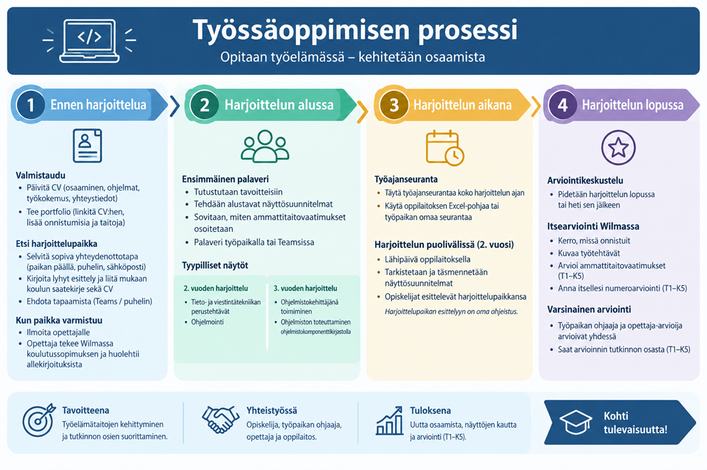

Työssäoppimisen prosessi

1. Ennen harjoittelua
Päivitä CV
CV:ssä kannattaa tuoda tiiviisti esille:- oma osaamisesi
- käyttämäsi ohjelmat ja työkalut
- aikaisempi työkokemus
- yhteystietosi
CV:n tekemiseen hyvä ohjelma on Canva (kirjaudu koulun sähköpostiosoitteella).
Tee portfolio
- Lisää portfolion linkki CV:hen.
- Valitse portfolioon töitä, joissa olet mielestäsi onnistunut.
- Kerro myös osaamisestasi, esimerkiksi käyttämistäsi ohjelmointikielistä ja työkaluista.
- Esimerkki
Etsi harjoittelupaikka
Harjoittelupaikan etsimiseen kannattaa varata aikaa. Sopivan paikan löytäminen voi olla erityisesti 2. vuoden opiskelijalle haastavaa.
Miten otan yritykseen yhteyttä?- Selvitä, mikä yhteydenottotapa sopii yritykselle.
- Joissakin yrityksissä kannattaa käydä paikan päällä.
- Joihinkin yrityksiin yhteydenotto tapahtuu sähköpostilla.
- Sähköpostissa kerro lyhyesti itsestäsi ja siitä, millaista harjoittelupaikkaa etsit.
- Liitä mukaan koulun saatekirje ja CV.
- Ehdota mahdollisuutta keskustella harjoittelusta esimerkiksi paikan päällä, Teamsissa tai puhelimitse.
Materiaaleja:
Kun harjoittelupaikka varmistuu
Ilmoita harjoittelupaikasta heti opettajallesi.Opettaja:
- tekee Wilmassa harjoittelusopimuksen eli koulutussopimuksen
- huolehtii sopimuksen allekirjoittamisesta työpaikan kanssa.
2. Harjoittelun alussa
Ensimmäinen palaveri
Harjoittelun ensimmäisten viikkojen aikana pidetään yhteinen palaveri. Palaverissa:- tutustutaan harjoittelun tavoitteisiin
- tehdään alustavat näyttösuunnitelmat
- sovitaan, miten tutkinnon osien ammattitaitovaatimukset voidaan osoittaa harjoittelun aikana.
Ohjelmistokehittäjien näytöt
2. vuoden harjoittelu 3. vuoden harjoittelu Näyttösuunnitelmat ovat alustavia ja niitä voidaan tarkentaa harjoittelun aikana.3. Harjoittelun aikana
Muista työajanseuranta
Täytä työajanseurantaa koko harjoittelun ajan. Voit käyttää:- oppilaitoksen Excel-pohjaa tai
- työpaikan omaa työajanseurantaa, jos sellainen on käytössä.
Harjoittelun puolivälissä
2. vuoden harjoittelussa järjestetään yleensä lähipäivä oppilaitoksella. Lähipäivässä:- tarkastetaan ja täsmennetään näyttösuunnitelmia
- opiskelijat esittelevät lyhyesti harjoittelupaikkansa.
4. Harjoittelun lopussa
Arviointikeskustelu
Harjoittelun lopussa tai heti sen jälkeen pidetään arviointikeskustelu.Tee itsearviointi Wilmassa
Itsearvioinnissa:- kerro, missä onnistuit
- kuvaa, mitä työtehtäviä teit harjoittelun aikana
- arvioi, miten tutkinnon osan ammattitaitovaatimukset mielestäsi täyttyivät
- anna itsellesi numeroarviointi T1–K5
Varsinainen arviointi
Varsinaisesta arvioinnista päättävät yhdessä:- työpaikan ohjaaja
- opettaja-arvioija.
Muista nämä
- ☐ CV päivitetty
- ☐ Portfolio tehty ja linkitetty CV:hen
- ☐ Harjoittelupaikka löydetty
- ☐ Opettajalle ilmoitettu harjoittelupaikasta
- ☐ Ensimmäinen palaveri pidetty
- ☐ Näyttösuunnitelmat tehty
- ☐ Työajanseuranta kunnossa
- ☐ Itsearviointi täytetty Wilmassa
- ☐ Arviointikeskustelu pidetty
Ennen
Aikana
Lopussa